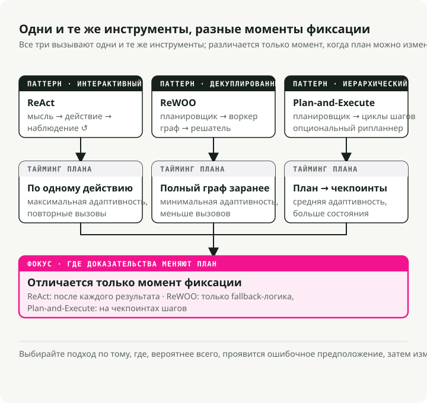
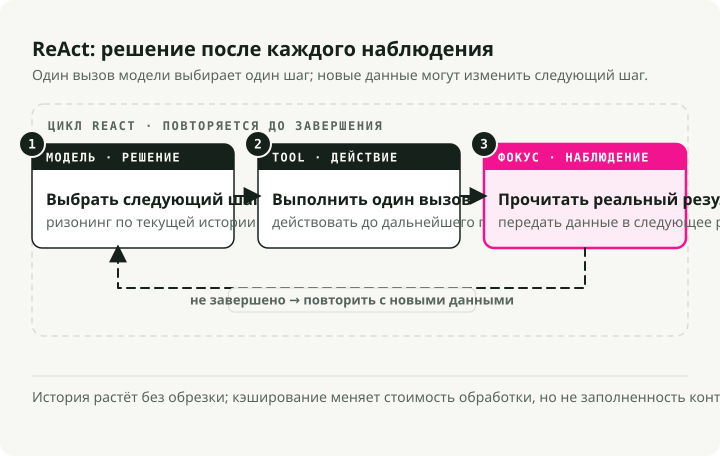
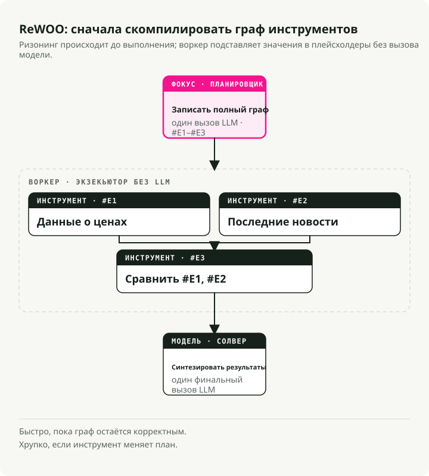
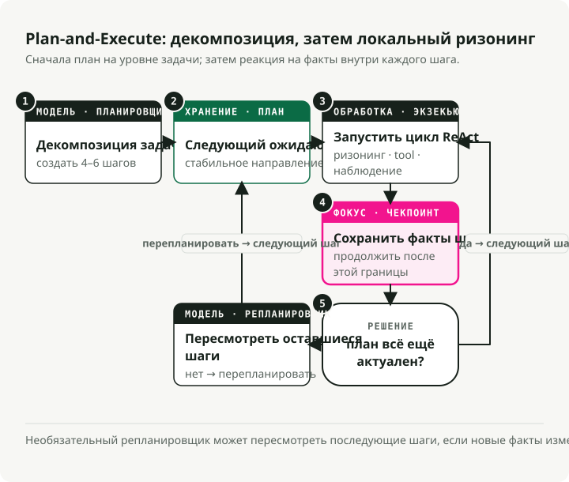
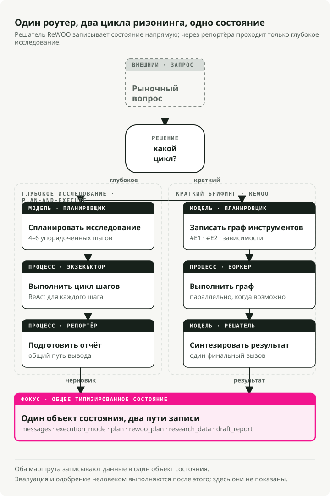

Автоматический перевод
Эта статья была автоматически переведена с оригинальной английской версии.
Циклы рассуждений AI-агентов в 2026 году: ReAct vs ReWOO vs Plan-and-Execute
Часть 1 серии Engineering the Agentic Stack
Создание полезных AI-агентов теперь в основном сводится к системному дизайну, а не к prompt engineering. Самое важное решение — это цикл рассуждений агента: как система планирует, вызывает инструменты, наблюдает результаты и решает, когда остановиться.
В этом посте сравниваются три паттерна циклов AI-агентов, которые стоит знать в 2026 году: ReAct, ReWOO и Plan-and-Execute. Сквозной пример — агент Market Analyst Agent, который я собрал в LangGraph; полный код доступен на GitHub.
Кратко: ReAct гибкий, но дорогой; ReWOO быстрый, когда workflow предсказуем; Plan-and-Execute подходит для многошагового анализа. Production AI-агент может маршрутизировать запросы между разными циклами рассуждений, используя общее состояние и checkpointed-узлы LangGraph, чтобы каждая задача получала цикл, соответствующий ее форме.
Почему важны циклы рассуждений AI-агентов
Год назад сделать LLM полезной означало в основном правильно сформулировать prompt. Теперь все упирается в дизайн графа: как связаны рассуждение, использование инструментов и память.
Цикл рассуждений находится в центре этого графа. Он определяет, когда модель думает, когда вызывает инструмент и когда останавливается. Если выбрать не тот цикл, вы потратите лишние токены на ненужные вызовы, добавите секунды задержки на каждом ходе или агент сломается при первом же неожиданном результате от инструмента.
Три паттерна рассуждений AI-агентов

ReAct: думай, действуй, наблюдай, повторяй
ReAct (Yao et al., 2022) — исходный паттерн для интерактивных агентов. Он работает в цикле:
- Thought: агент генерирует "мысль", чтобы разложить цель и спланировать следующий шаг.
- Action: на основе этой мысли он вызывает инструмент.
- Observation: агент читает результат, который обновляет его понимание для следующей мысли.

Плюсы:
- Опора на реальные наблюдения снижает число выдуманных фактов.
- Агент может менять стратегию на лету в зависимости от того, что только что увидел.
- "Scratchpad" дает audit trail рассуждений.
Минусы:
- История накапливается и заново обрабатывается на каждом шаге, поэтому задержка и стоимость растут вместе с длиной цикла.
- Неэффективен там, где вызовы инструментов можно было спланировать заранее — именно эту нишу и закрывает ReWOO.
- Без условия остановки или лимита шагов цикл будет работать бесконечно.
Лучше всего подходит для: исследовательских задач, отладки, ситуаций, где нельзя предсказать следующий шаг.
ReWOO: спланируй все заранее
ReWOO (Reasoning WithOut Observation) — более эффективный родственник ReAct. Ключевая идея — разделить рассуждение и выполнение инструментов: вместо остановки после каждого действия для наблюдения ReWOO планирует всю последовательность вызовов инструментов за один проход.
- Plan: один вызов LLM записывает полный план вызовов инструментов, используя плейсхолдеры переменных (
#E1,#E2) для выходов, которых еще не существует. - Worker: исполнитель без LLM запускает запланированные инструменты последовательно или параллельно, заполняя плейсхолдеры.
- Solver: финальный вызов LLM берет собранные наблюдения и формирует ответ.

Плюсы:
- Примерно в 5 раз эффективнее по токенам, чем ReAct, потому что не нужно многократно передавать историю Thought-Action-Observation.
- Ниже задержка. История не пересылается заново на каждом шаге.
- Planner можно дообучать отдельно, без live environment.
Минусы:
- Хрупок, если инструменты ведут себя нестабильно. План предполагает, что все сработает.
- Требует предсказуемых workflow.
- Без явной fallback-логики ошибочный план продолжит выполняться.
Лучше всего подходит для: быстрых снимков состояния, status check, дашбордов. Всего, где инструменты ведут себя предсказуемо.
Plan-and-Execute: гибридный подход
Plan-and-Execute занимает промежуточное место между двумя предыдущими. В статье описано простое разделение, которое переняли большинство современных агентов:
- Этап планирования: сначала агент генерирует план, разбивая задачу на более мелкие подзадачи.
- Этап выполнения: затем агент выполняет эти подзадачи.
Изначально статья фокусировалась на zero-shot prompting. Современные фреймворки вроде LangGraph развили эту идею в полноценный orchestration pattern с последовательным выполнением и выбором модели на каждом шаге (сильная reasoning-модель для планирования и более дешевая — для исполнения).

Плюсы:
- Иерархическое рассуждение, повторяющее то, как эксперт-человек разбивает проект.
- Возможен re-planning. Можно остановиться и переоценить ситуацию, если результат шага оказался неожиданным.
- Специализация моделей. Planner может быть дорогим, executor — дешевым.
- Ограниченная сложность с четким checkpoint после каждого шага.
Минусы:
- Более высокая задержка, чем у ReWOO, потому что шаги выполняются последовательно.
- Больше состояния, которым нужно управлять.
- Избыточен для one-shot запросов.
Лучше всего подходит для: сложного многошагового анализа, исследовательских задач, всего, где в конце нужен синтез.
Как выбрать цикл рассуждений AI-агента
| Feature | ReAct (2022) | Plan-and-Execute (2023) | ReWOO (2023) |
|---|---|---|---|
| Core philosophy | Импровизатор: действует, а затем решает, что делать дальше по результату. | Архитектор: строит полный blueprint, выполняет его, затем проверяет. | Оптимизатор: пишет "скрипт" с переменными и запускает его целиком. |
| Workflow | Итеративный цикл: Thought → Action → Observation. | Два этапа: Phase 1 (Planning), Phase 2 (Execution). | Разделение: Planner создает граф вызовов инструментов; Worker выполняет их. |
| Adaptability | Максимальная: может менять направление после каждого вызова инструмента. | Средняя: обычно перепланирует только после завершения набора шагов. | Минимальная: обычно следует исходному скрипту, если только Solver не упадет. |
| Efficiency | Низкая: высокое потребление токенов; на каждом шаге нужно перечитывать всю историю. | Средняя: экономит токены, потому что не "передумывает" во время исполнения. | Высокая: минимум вызовов LLM; можно параллелить выполнение инструментов для скорости. |
| Best for | Открытое исследование или задачи с непредсказуемыми результатами. | Долгие задачи с длинным горизонтом, где нужна стабильная цель (например, написание статьи). | Структурированные, повторяемые workflow (например, проверка погоды в 5 городах). |
1. ReAct: паттерн "думать по ходу"
Как это ощущается: как человек, отлаживающий проблему. "Попробую вот это... так, не сработало, тогда попробую другое."
Сильная сторона: справляется с неизвестными неизвестностями. Если результат поиска открывает новую тему, агент может сменить направление на следующем шаге.
Слабая сторона: склонен зацикливаться на неудачном действии. Самый дорогой по токенам паттерн.
2. Plan-and-Execute: паттерн, ориентированный на миссию
Как это ощущается: как project manager. "Вот план из 5 шагов. Давайте выполним шаги с 1 по 5, а потом проверим, закончили ли мы."
Сильная сторона: удерживает агента сфокусированным на высокоуровневой цели. Дает лучшую успешность на длинных и сложных задачах.
Слабая сторона: если шаг 1 ломается так, что это разрушает шаги 2–5, агент может продолжать выполнять сломанный план, прежде чем это заметит.
3. ReWOO: паттерн компилятора
Как это ощущается: как написание небольшой программы. "Мне нужны данные из Tool A и Tool B, а потом я объединю их в Tool C."
Сильная сторона: намного быстрее и дешевле. План один раз компилируется с плейсхолдерами (#E1 для выхода первого инструмента), а затем исполняется без дополнительных вызовов LLM до финального синтеза.
Слабая сторона: "слеп" во время исполнения. Если первый инструмент говорит "Я не могу найти этого человека", агент все равно выполнит следующие шаги, которые зависели от существования этого человека.
Какой вариант выбрать
- ReAct — если агент общается с пользователем и должен реагировать в моменте.
- Plan-and-Execute — если вы автоматизируете длинную многошаговую задачу, например исследовательский отчет.
- ReWOO — если у вас предсказуемый pipeline и вы хотите сократить расходы на API примерно на 80%.
Практический пример: агент Market Analyst Agent
Чтобы сделать это конкретнее, я собрал Market Analyst Agent, который использует все три паттерна в одной кодовой базе для задачи рыночного анализа.
Для orchestration он использует LangGraph. Все три паттерна разделяют один и тот же объект состояния, поэтому router может выбирать, какой из них запускать для каждого запроса:

Определение состояния
Общее состояние хранит все, что агенту нужно во всех режимах:
class PlanStep(BaseModel):
"""A single step in the research plan."""
step_number: int
description: str
tool_hint: str | None = None
completed: bool = False
result: str | None = None
class UserProfile(BaseModel):
"""Structured user context loaded from long-term memory."""
risk_tolerance: str | None = None
investment_horizon: str | None = None
class AgentState(BaseModel):
"""Main state for the Market Analyst Agent graph."""
# Identity and profile context for memory-backed personalization
user_id: str
user_profile: UserProfile = Field(default_factory=UserProfile)
# Message history with LangGraph's add_messages reducer
messages: Annotated[list, add_messages] = Field(default_factory=list)
# Execution mode (set by router)
execution_mode: ExecutionMode | None = None
# Plan-and-Execute state
plan: list[PlanStep] = Field(default_factory=list)
current_step_index: int = 0
# ReWOO state
rewoo_plan: list[ReWOOPlanStep] = Field(default_factory=list)
# Research results
research_data: ResearchData | None = None
# HITL output
draft_report: DraftReport | None = None
report_approved: bool = False
Паттерн 1: реализация Plan-and-Execute
Plan-and-Execute — правильный выбор для задач, где нужен многошаговый синтез. Ключевой момент — держать планирование и исполнение раздельно: сильная модель строит исходный план, затем цикл ReAct выполняет каждый шаг с возможностью реагировать на результаты инструментов.
Как это соответствует паттерну:
- Один предварительный этап планирования. Один вызов LLM создает весь план как список описаний шагов.
- Структурированный вывод через Schema-Guided Reasoning, который гарантирует валидный JSON.
- Никакого выполнения инструментов на этом этапе. Planner только решает, что делать, а не как.
- Человекочитаемые шаги. Каждый шаг — это текст, который будет интерпретировать executor.
# System prompt guides the LLM to think like a research analyst
# creating a strategic plan, not immediate tool calls
PLANNER_SYSTEM_PROMPT = """You are a senior investment research analyst.
Break down stock analysis requests into 4-6 research steps covering:
1. Current price and basic metrics
2. Recent news and announcements
3. Competitor analysis (if relevant)
4. Financial health assessment
5. Risk factors
6. Investment thesis synthesis
Output as JSON with step_number, description, and tool_hint."""
# Schema-Guided Reasoning: Enforce structure with Pydantic
class PlanOutput(BaseModel):
"""Structured output for the planner."""
steps: list[PlanStep] = Field(description="Research steps to execute")
ticker: str = Field(description="The stock ticker being analyzed")
def planner_node(state: AgentState) -> dict:
"""Generate a research plan from the user's request.
This is Phase 1 of Plan-and-Execute: creating the high-level strategy.
"""
# Use a powerful model for strategic planning
llm = ChatAnthropic(model="claude-sonnet-4-5-20250929", temperature=0)
# Apply Schema-Guided Reasoning to guarantee valid plan structure
# This prevents common formatting errors that would break execution
structured_llm = llm.with_structured_output(PlanOutput)
# Context from long-term memory personalizes the plan
profile_context = f"""
User Profile:
- Risk Tolerance: {state.user_profile.risk_tolerance}
- Investment Horizon: {state.user_profile.investment_horizon}
"""
# Single LLM call creates the complete plan
result: PlanOutput = structured_llm.invoke([
SystemMessage(content=PLANNER_SYSTEM_PROMPT + profile_context),
HumanMessage(content=f"Create a research plan for: {last_user_message}"),
])
# State update: Store the plan and initialize tracking
return {
"plan": result.steps, # The sequential steps to execute
"current_step_index": 0, # Start at step 0
"research_data": ResearchData(ticker=result.ticker), # Initialize data container
}
Эта строка llm.with_structured_output(PlanOutput) — это Schema-Guided Reasoning (SGR), о котором я писал в предыдущем посте. Принудительное применение схемы PlanOutput означает, что planner всегда возвращает валидный список шагов. Затем LangGraph использует эти структурированные выходы, чтобы управлять детерминированным control flow через conditional edges.
Паттерн 2: выполнение через ReAct
Когда план уже есть, executor выполняет каждый шаг как отдельный цикл ReAct. Это фаза 2: каждый шаг достаточно мал, чтобы цикл Thought-Action-Observation оставался сфокусированным, а агент мог реагировать на любой результат инструмента.
Как часть ReAct соответствует паттерну:
- Итеративное выполнение. По одному шагу за раз, с обратной связью через наблюдения.
- Цикл Thought-Action-Observation работает внутри
create_react_agent. - Результаты предыдущих шагов подаются как контекст для текущего рассуждения.
- Агент выбирает инструменты на основе описания шага.
- Он может менять подход в середине шага в зависимости от того, что вернул инструмент.
# Tools available for the ReAct agent to choose from
TOOLS = [
get_stock_snapshot,
get_price_history,
search_news,
search_competitors,
get_financials,
]
def executor_node(state: AgentState) -> dict:
"""Execute the current step using a ReAct agent.
This is Phase 2 of Plan-and-Execute: adaptive execution of each planned step.
Each step runs as a mini ReAct loop until completion.
"""
# Get the current step from the plan
current_step = state.plan[state.current_step_index]
# Build context from what we've learned so far
# This matters: each step builds on previous observations
previous_context = ""
for step in state.plan[:state.current_step_index]:
if step.result:
previous_context += f"\nStep {step.step_number}: {step.result}\n"
# Create a ReAct agent for this step
# LangGraph's create_react_agent implements the full Thought-Action-Observation loop:
# 1. Agent generates a "thought" about what tool to call
# 2. Agent calls the tool ("action")
# 3. Tool returns result ("observation")
# 4. Agent decides: call another tool or finish
react_agent = create_react_agent(
model=ChatAnthropic(model="claude-sonnet-4-5-20250929"),
tools=TOOLS,
)
# Invoke the ReAct loop for this single step
# The agent will loop internally until it completes the step
result = react_agent.invoke({
"messages": [
SystemMessage(content=EXECUTOR_SYSTEM_PROMPT),
HumanMessage(content=f"""Execute Step {current_step.step_number}:
{current_step.description}
Ticker: {state.research_data.ticker}
Previous findings: {previous_context}"""),
]
})
# Extract the final answer from the ReAct agent's message history
# The last message contains the synthesis after all tool calls
updated_plan = list(state.plan)
updated_plan[state.current_step_index] = PlanStep(
step_number=current_step.step_number,
description=current_step.description,
completed=True,
result=result["messages"][-1].content, # Final observation
)
# State update: Mark step complete and advance to next
return {
"plan": updated_plan,
"current_step_index": state.current_step_index + 1,
}
Это и есть основной поток Plan-and-Execute: мощная модель пишет план, затем ReAct выполняет каждый шаг с полной адаптивностью.
Паттерн 3: ReWOO для быстрых снимков
Для быстрых брифингов ReWOO пропускает чередующееся рассуждение и запускает инструменты параллельно. Planner заранее формирует скомпилированный скрипт вызовов инструментов, а worker выполняет его без какого-либо участия LLM.
Его форма:
- Три фазы (Planner → Worker → Solver), без циклов.
- Вызовы инструментов ссылаются на плейсхолдеры
#E1,#E2для результатов, которых еще не существует. - Никакой LLM во время выполнения. Worker просто запускает инструменты.
- Независимые инструменты выполняются параллельно.
- Один вызов синтеза в конце — сразу по всем данным.
Фаза 1: planner ReWOO (создает полный execution graph заранее)
class ReWOOPlanStep(BaseModel):
"""A step in the ReWOO plan with variable placeholders.
Key difference from Plan-and-Execute's PlanStep:
- Contains actual tool_name and tool_args (not just description)
- Uses variable references (#E1) for dependencies
"""
step_id: str # e.g., "#E1" - becomes a variable
description: str
tool_name: str # Exact tool to call
tool_args: dict # May contain variable refs like {"price": "#E1"}
depends_on: list[str] = [] # For dependency ordering
result: str | None = None
class ReWOOPlanOutput(BaseModel):
"""Structured output for ReWOO planner."""
steps: list[ReWOOPlanStep] = Field(description="Planned tool calls with variables")
def rewoo_planner_node(state: AgentState) -> dict:
"""Generate a complete plan of tool calls upfront.
This is the key difference from Plan-and-Execute: instead of creating
human-readable step descriptions, we create EXACT tool calls that
the worker will execute blindly.
"""
llm = ChatAnthropic(model="claude-sonnet-4-5-20250929", temperature=0)
# Schema-Guided Reasoning ensures valid tool call specifications
structured_llm = llm.with_structured_output(ReWOOPlanOutput)
ticker = state.research_data.ticker if state.research_data else "UNKNOWN"
# Single LLM call to plan ALL tool executions
result: ReWOOPlanOutput = structured_llm.invoke([
SystemMessage(content=REWOO_PLANNER_PROMPT),
HumanMessage(content=f"""Create a ReWOO plan for: {query}
Ticker: {ticker}
Output tool calls with:
- step_id: Variable name (#E1, #E2, etc.)
- description: What this accomplishes
- tool_name: Exact tool from the list
- tool_args: Dictionary of arguments
- depends_on: List of step_ids this depends on"""),
])
# State update: Store the complete execution plan
# Worker will execute this without any LLM involvement
return {"rewoo_plan": result.steps}
Фаза 2: worker ReWOO (выполняет инструменты без рассуждений LLM)
def rewoo_worker_node(state: AgentState) -> dict:
"""Execute all planned tools in parallel (no LLM calls).
This is the key efficiency: Worker is "dumb" - it just runs tools
according to the plan. No LLM calls = massive token savings.
"""
results = {} # Store results keyed by step_id (e.g., "#E1": "$150.23")
# Execute ALL independent steps in parallel using ThreadPoolExecutor
# This is where ReWOO gets its speed advantage
with ThreadPoolExecutor(max_workers=5) as executor:
futures = {
executor.submit(execute_tool, step): step
for step in state.rewoo_plan
if not step.depends_on # Only independent tools for parallel batch
}
# Collect results as they complete
for future in as_completed(futures):
step = futures[future]
results[step.step_id] = future.result()
# No LLM reasoning here - just store the raw tool output
# State update: Store results for the Solver phase
return {"rewoo_plan": updated_steps}
Фаза 3: solver ReWOO (синтезирует все результаты в одном вызове LLM)
def rewoo_solver_node(state: AgentState) -> dict:
"""Synthesize all tool results into a flash briefing.
This is the second efficiency gain: Instead of interleaving
LLM calls with tool execution (like ReAct), we make ONE
final synthesis call with all gathered data.
"""
# Build context from ALL tool results at once
tool_results = []
for step in state.rewoo_plan:
if step.result:
tool_results.append(f"### {step.description}\n{step.result}")
context = "\n\n".join(tool_results)
# Single LLM call to synthesize everything
structured_llm = llm.with_structured_output(FlashBriefingOutput)
result = structured_llm.invoke([
SystemMessage(content=REWOO_SOLVER_PROMPT),
HumanMessage(content=f"Create a flash briefing from this data:\n\n{context}"),
])
return {"draft_report": result}
Ключевое различие: ReWOO заранее планирует каждый вызов инструмента с плейсхолдерами (#E1, #E2), выполняет их параллельно без вызовов LLM в середине и синтезирует результат одним вызовом в конце. Это делает его дешевым для предсказуемых workflow.
Разбор кода: чем отличаются паттерны
Три паттерна различаются тем, когда и как они вызывают LLM:
| Pattern | LLM calls during execution | State updates | Key code pattern |
|---|---|---|---|
| Plan-and-Execute | 1 на планирование + 1 на каждый шаг | Последовательное завершение шагов | planner_node() → loop: executor_node() → reporter_node() |
| ReAct (within each step) | Несколько на шаг (циклы thought-action) | Накопленная история сообщений | create_react_agent() зацикливается внутри до завершения шага |
| ReWOO | 1 на планирование + 0 во время выполнения + 1 на синтез | Параллельное завершение инструментов | rewoo_planner_node() → rewoo_worker_node() → rewoo_solver_node() |
Между ними меняется то, что именно производит planner. Это определяет все, что происходит дальше.
-
Plan-and-Execute создает человекочитаемые описания шагов:
# Planner output (list of PlanStep objects) plan = [ PlanStep( step_number=1, description="Get current price and key financial metrics", tool_hint="get_stock_price" ), PlanStep( step_number=2, description="Search for recent news and earnings", tool_hint="search_news" ), # ... more steps ]Executor читает каждое описание и решает, какие инструменты вызвать. Гибко, но требует один вызов LLM на шаг.
-
У ReAct нет предварительного плана. Он использует итеративное рассуждение:
# No planning phase - ReAct works step-by-step with accumulated messages messages = [ HumanMessage(content="Execute Step 1: Get current price"), AIMessage(content="I'll call get_stock_price"), ToolMessage(tool_call_id="1", content="$132.45"), AIMessage(content="Now I need metrics..."), # ... agent continues until step complete ]Несколько вызовов LLM на шаг с адаптацией на основе наблюдений. Максимальная гибкость, максимальная стоимость.
-
ReWOO создает явные, исполнимые спецификации вызовов инструментов:
# Planner output (list of ReWOOPlanStep objects) rewoo_plan = [ ReWOOPlanStep( step_id="#E1", tool_name="get_stock_price", tool_args={"ticker": "NVDA"} ), ReWOOPlanStep( step_id="#E2", tool_name="search_news", tool_args={"query": "NVDA earnings", "limit": 5} ), # ... all tool calls planned upfront ]Worker выполняет их вслепую, без участия LLM. Все рассуждение сосредоточено в planner и solver. Самый дешевый из трех.
Поток памяти и состояния:
- Plan-and-Execute: состояние проходит через
plan→current_step_index→research_data. - ReAct: состояние накапливается в массиве
messages(полная история диалога). - ReWOO: состояние проходит через
rewoo_plan, а поляresultзаполняются worker.
Собираем все вместе: wiring графа
Вот как три паттерна сосуществуют в одной системе LangGraph. Они разделяют один AgentState и живут в одном графе. Router выбирает путь для каждого запроса, так что это один агент с тремя режимами выполнения, а не три агента в одном плаще.
LangGraph сохраняет wiring декларативным:
def create_graph(checkpointer=None):
builder = StateGraph(AgentState)
# Add nodes
builder.add_node("router", router_node)
builder.add_node("planner", planner_node)
builder.add_node("executor", executor_node)
builder.add_node("reporter", reporter_node)
builder.add_node("rewoo_planner", rewoo_planner_node)
builder.add_node("rewoo_worker", rewoo_worker_node)
builder.add_node("rewoo_solver", rewoo_solver_node)
# Define edges
builder.add_edge(START, "router")
builder.add_conditional_edges("router", route_after_router, {
"planner": "planner",
"rewoo_planner": "rewoo_planner",
})
# Deep Research path
builder.add_edge("planner", "executor")
builder.add_conditional_edges("executor", route_after_executor, {
"executor": "executor", # Loop back for more steps
"reporter": "reporter", # Done with plan
})
builder.add_edge("reporter", END)
# Flash Briefing path (ReWOO)
builder.add_edge("rewoo_planner", "rewoo_worker")
builder.add_edge("rewoo_worker", "rewoo_solver")
builder.add_edge("rewoo_solver", END)
return builder.compile(
checkpointer=checkpointer,
interrupt_before=["reporter"], # HITL pause for approval
)
Автоматический выбор паттерна с router
Чтобы подбирать правильный цикл для каждого запроса, я добавил router classifier. Он использует Schema-Guided Reasoning, чтобы классификация оставалась надежной:
class ExecutionMode(str, Enum):
"""Execution mode for the agent."""
DEEP_RESEARCH = "deep_research" # Plan-and-Execute + ReAct (thorough)
FLASH_BRIEFING = "flash_briefing" # ReWOO (fast, token-efficient)
class RouterOutput(BaseModel):
"""Structured output for the router."""
mode: ExecutionMode # DEEP_RESEARCH or FLASH_BRIEFING
ticker: str
reasoning: str
ROUTER_SYSTEM_PROMPT = """Classify the user's request:
1. **deep_research**: Complex analysis requiring synthesis
- Examples: "Analyze strategic risks", "investment thesis"
2. **flash_briefing**: Quick snapshots, simple data retrieval
- Examples: "quick snapshot", "current price"
Default to deep_research if unclear."""
structured_llm = llm.with_structured_output(RouterOutput)
С этим механизмом пользователи не выбирают режим сами. Router самостоятельно отправляет "current price" в ReWOO, а "investment thesis" — в Plan-and-Execute.
Ключевые выводы
- ReAct — выбор по умолчанию для гибкости, ценой токенов и задержки.
- ReWOO выигрывает по скорости и стоимости, когда инструменты надежны, а результаты предсказуемы.
- Plan-and-Execute — правильный выбор для сложного анализа, где в конце нужен синтез.
- Router может выбирать между ними для каждого запроса, так что пользователю не нужно делать это вручную.
- Управление состоянием имеет значение. Именно checkpointing в LangGraph делает возможными прерывания и восстановление.
Полная реализация, включая router и общее состояние, доступна в репозитории Market Analyst Agent.
Что дальше
Часть 2, Архитектура памяти AI-агентов в 2026 году, посвящена краткосрочному контексту с checkpointing в PostgreSQL и долгосрочным знаниям в Qdrant vector storage. Именно это делает возможными workflow с pause/resume и обучение между сессиями.
Ссылки
- ReAct: Synergizing Reasoning and Acting in Language Models (Yao et al., 2022)
- ReWOO: Decoupling Reasoning from Observations for Efficient Augmented Language Models (Xu et al., 2023)
- Plan-and-Solve Prompting: Improving Zero-Shot Chain-of-Thought Reasoning by Large Language Models (Wang et al., 2023)
- Репозиторий Market Analyst Agent
Код Market Analyst Agent доступен на GitHub, если хотите читать пост параллельно с кодом.
Серия: Engineering the Agentic Stack
- Часть 1: Циклы рассуждений AI-агентов в 2026 году (этот пост)
- Часть 2: Архитектура памяти AI-агентов в 2026 году — checkpoints, vector stores и document memory
- Часть 3: Использование инструментов AI-агентами в 2026 году — MCP, CLI, Skills, выполнение кода и ACI
- Часть 4: Безопасность AI-агентов в 2026 году — guardrails, permissions, sandboxes, HITL и scope в MCP
- Часть 5: Runtime для long-running AI-агентов в 2026 году — sessions, sandboxes, checkpoints, harnesses и варианты deployment